Steven Katsaris
Reich Family Genealogical Research Project


 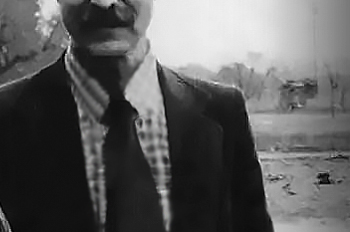
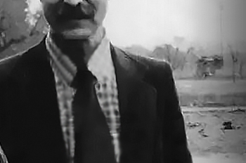


Remembering the Reverend Father
(Reich Family) 11/03/24 - Steven Anthony Katsaris was born on 26 March 1928 in Canton, Ohio to Antonious Anthony Peter Katsaris and Mary A Christou Katsaris. Steven's parents immigrated from the island of Euboea in Greece.
Steven Katsaris married Sophia M Papadeas. They divorced in October 1970 in San Mateo California. Steven Katsaris then married Anne Katherine Tomaja in 1972 in Mendocino California. Anne was born on November 11, 1940. She later became a nurse. Steven and Anne divorced in March 1977 in Mendocino California. Steven and Anne remarried on 17 September 1989 in Reno Nevada.
Steven Katsaris had three children with Sophia M Papadeas Katsaris. Anthony Katsaris was their son. Maria Katsaris was born June 9th 1953 in Pittsburgh Pennsylvania. She died on November 18th 1978 in Jonestown Guyana South America. Elaine Constance Katsaris (Launer) was born April 7th 1959 in Salt Lake City Utah. She died on July 24th 2000 in San Mateo California. The Social Security Numerical Identification File for Elaine Constance Katsaris lists her as the daughter of Steven A Katsaris and Sophia M Papadeas.
Steven was a Greek Orthodox Reverend Father. Steven was the head of Trinity School in Ukiah California. Steven was a Reverend Father in various Greek Orthodox Churches across the U.S.
In August 1972, the Katsaris family was first introduced to a religious group in Ukiah California called Peoples Temple headed by Reverend Jim Jones. Steven Katsaris was the guest speaker at a late night meeting convened just for him. In attendance was his 19 year old daughter, Maria Katsaris. After Steven Katsaris finished his guest speaking, the family left the building while the tape continued to roll with Jones continuing to address his congregation. Jones denounced the Greek Orthodox Church and further denounced Steven Katsaris. He then expressed his interest in winning over Maria Katsaris. Steven's daughter, Maria Katsaris, joined Peoples Temple. She traveled with the group to Guyana South America where she would later play a major role in Jones' organization, especially in the final year of its existence.
Steven Katsaris appealed to the media and to politicians who represented his district in California to bring his daughter home whom he felt was being held against her will by Jim Jones in Jonestown Guyana. On April 17th 1978, in a radio transmission from Jonestown to address concerned relatives in America, Maria Katsaris made strong accusations against her father. She vowed she would never leave Jonestown and return to the US.
In the Fall of 1977, Steven Katsaris submitted an affidavit classified as, Concerned Relatives, Exhibit C-1: Affidavit of Steven A. Katsaris, An Account of Some of My Experiences with Peoples Temple Church when I Attempted to Visit My Daughter in Guyana. In this affidavit, Steven Katsaris described his final meeting with his daughter, Maria, in Georgetown Guyana, in November 1977. The lead-up to the meeting was fraught with one cancellation after another. Finally, the meeting would take place at 7:15 on a Sunday morning. The following is Steven Katsaris' account of that final meeting, taken from the affidavit.
"At 7:15 Sunday morning, I was informed by a representative of Peoples Temple Church that Maria would meet with me in 45 minutes. Ambassador Mann and Mr. McCoy were at the meeting when Maria arrived with four other persons, two men - one who identified himself as an attorney representing the Church – and two women. Maria appeared agitated, could not look me in the eye, and did not return my embrace which appeared unusual and even ominous to me. She looked as if she had not slept well or had been deprived of sleep over a long period of time and her general attitude was one of suspicion, hostility and paranoia."
"She accused me of causing trouble for the Guyanese government and stated that because of my efforts Guyana had been black listed by the International Human Rights Commission. She stated further that the Church had been informed by the United States government that I was a member of a conspiracy against the Church and was associated with a right wing congressman who intended to destroy the Church. She accused me of lying to her about my health. When I pointed to Paula Adams, one of the women who accompanied her to the meeting, and asked if she knew that this woman had gone to Mr. McCoy and told him that I had abused my daughter sexually, Maria refused to discuss the subject. When I told her that I had information that she had signed an undated suicide note, she demanded to know the source of my information. I told her that was not the important issue and that she could alleviate my anxiety by simply telling me it was not true. She replied that since I would not reveal the source of my information she would not discuss that subject."
"In the course of the conversation with Maria I told her that before leaving for Guyana I had spoken with Grace Stoen who wanted me to convey her love and concern to her son John. Maria told me that Grace was an unfit mother and she had abused her child and that Maria was now the mother for John. She also told me in a tone that I did not believe possible from my daughter that if Grace made any attempt to get her child back she would be sorry. My daughter’s affect and the manner in which she spoke conveyed to me the tone of a serious threat."
"The entire meeting was extremely painful for me and depressing. I managed to tell my daughter that if she ever wanted to return home a ticket would be waiting for her at the Embassy. When I told her of my belief in God and that somehow things would work out, she and another woman from the Church were quick to point out to me that they do not believe in God." - Concerned Relatives, Exhibit C-1: Affidavit of Steven A. Katsaris, An Account of Some of My Experiences with People’s Temple Church when I Attempted to Visit My Daughter in Guyana.
On November 18th 1978, in Jonestown Guyana South America, Jim Jones led 909 members of Peoples Temple in the largest mass suicide in history. Congressman Leo Ryan; photographer Greg Robinson of The San Francisco Examiner; NBC cameraman Bob Brown; NBC reporter Don Harris; and Temple defector Patricia Parks - were shot to death by Jim Jones' loyal death squad on the Port Kaituma airstrip. Sharon Amos and her grown daughter Liane Harris along with Sharon's young children, Christa Amos and Martin Amos, all died at a house owned by Peoples Temple in Lamaha Gardens in Georgetown. Anthony Katsaris was badly wounded on the airstrip.
Prior to the mass suicide, Anthony Katsaris traveled to Jonestown with Congressman Leo Ryan to persuade his sister, Maria Katsaris, to return with him to California. In a photo of Maria and Anthony on the morning of the suicides in Jonestown, likely taken by San Francisco Examiner photographer, Greg Robinson, who was killed by Jones' death squad at the Port Kaituma airstrip, Anthony looks thankful and happy to just be standing next to his sister. His face speaks volumes of his adoration and love for a sister, it seems, he'd love to hold and never let go. Maria, on the other hand, has a far away look on her face of utter obstination. Aside from taking photos of the siblings, NBC News conducted a short interview with Maria and Anthony in Jonestown in November 1978.
Maria Katsaris died on the night of November 18th 1978, in Jim Jones' cabin, by self-administered cyanide poisoning. She was 25 years old. Maria Katsaris was laid to rest at Potter Valley Cemetery in Potter Valley, Mendocino County, California.
The Reverend Father Steven Anthony Katsaris died on 26 July 2019 at the ripe old age of 91 in Spokane Washington. Trisagion service was held on July 31, 2019 at 5:00 PM and his funeral was on August 1, 2019 at 8:00 AM at Holy Trinity Greek Orthodox Church, 1703 N Washington St, Spokane, Washington. Advantage Funeral and Cremation Services South Hill of Spokane, Washington was in charge of the funeral services. Reverend Father Steven Katsaris is laid to rest at Whitepine Cemetery in White Pine, Sanders County, Montana.
God rest your sweet soul, Reverend Father Steven. May you linger in the sweet embrace of your lovely daughters, Maria and Elaine.
Copyright 2024 All Rights Reserved
Maria Katsaris
Jonestown Radio Call
April 17th 1978

 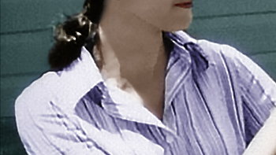
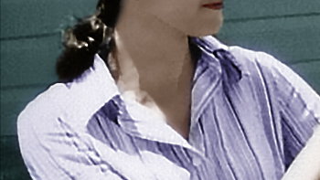

 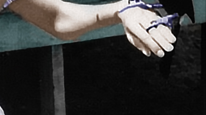
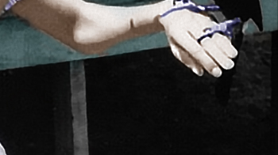


Anthony & Maria Katsaris
Jonestown NBC News Interview
November 1978
Anthony & Maria Katsaris
Their Final Breakfast
November 18th 1978
 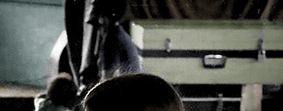
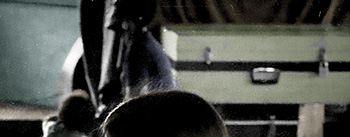


 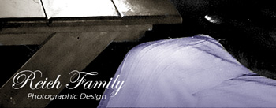
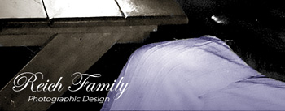

The Death Tape
Jonestown Suicides
November 18th 1978


 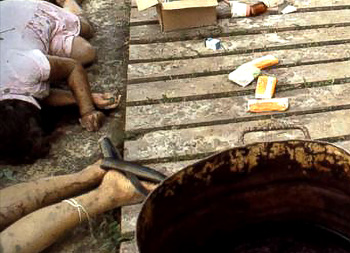
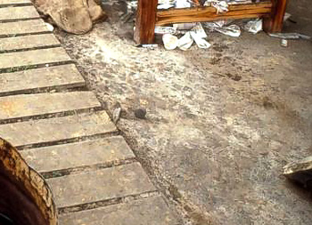
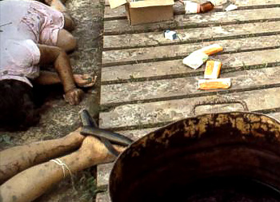
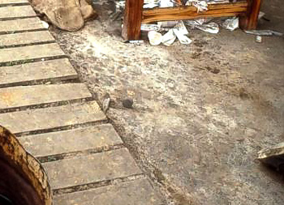


Research, Writing and Photographic Design by
Reich Family Genealogical Research Project
The Reich Family
Peoples Temple Resources
Alternative Considerations of Jonestown & Peoples Temple
Transmissions from Jonestown
Special thanks to the research of Barnett
Katsaris Family's First Introduction to Peoples Temple in Ukiah California
FBI Tape No. Q1021-A August 1972
Transcript of Katsaris Family's First Introduction to Peoples Temple in Ukiah California
FBI Tape No. Q1021-A August 1972
NBC News 1978 Interview with Anthony and Maria Katsaris
Cameraman: Bob Brown / Interviewer: Don Harris
Radio Calls for Concerned Relatives April 17 1978
FBI No. Q 736 Press conference on Concerned Relatives (Maria speaks at 19:54)
San Francisco Examiner / UPI 1978 / Photographer: Greg Robinson
Maria Katsaris Memorial Site
Reich Family Genealogical Research Project
Find a Grave Memorial for Elaine Constance Katsaris Launer
"United States Census, 1940", FamilySearch (https://www.familysearch.org/ark:/61903/1:1:KWP3-RTJ : Thu Mar 07 13:14:16 UTC 2024), Entry for Antonious Katsaris and Mary Katsaris, 1940.
"California Divorce Index, 1966-1984," FamilySearch (https://familysearch.org/ark:/61903/1:1:VPTJ-NM2 : 15 May 2014), Sophia M Papadeas and Steven A Katsaris, Oct 1970; from "California Divorce Index, 1966-1984," database and images, Ancestry (http://www.ancestry.com : 2007); citing San Mateo, California, Health Statistics, California Department of Health Services, Sacramento.
"California Divorce Index, 1966-1984," FamilySearch (https://familysearch.org/ark:/61903/1:1:VPTJ-NMV : 15 May 2014), Anne K Thomaja and Steven A Katsaris, Mar 1977; from "California Divorce Index, 1966-1984," database and images, Ancestry (http://www.ancestry.com : 2007); citing Mendocino, California, Health Statistics, California Department of Health Services, Sacramento.
"Nevada Marriage Index, 1956-2005", FamilySearch (https://familysearch.org/ark:/61903/1:1:VVVN-ML8 : 20 September 2019), Steven Anthony Katsaris and Anne Katherine Tomaja, 1989.